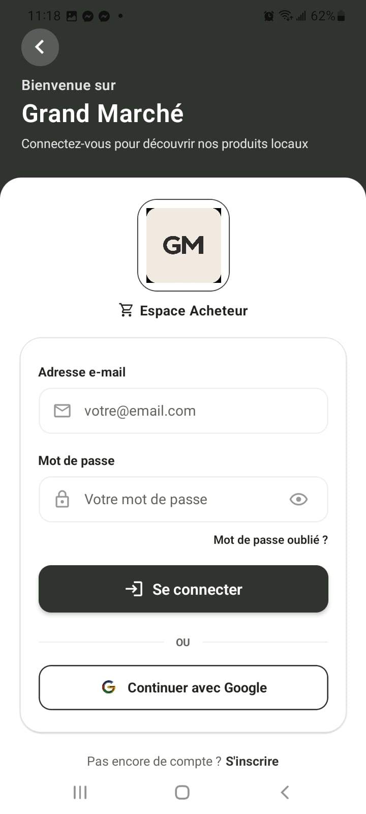
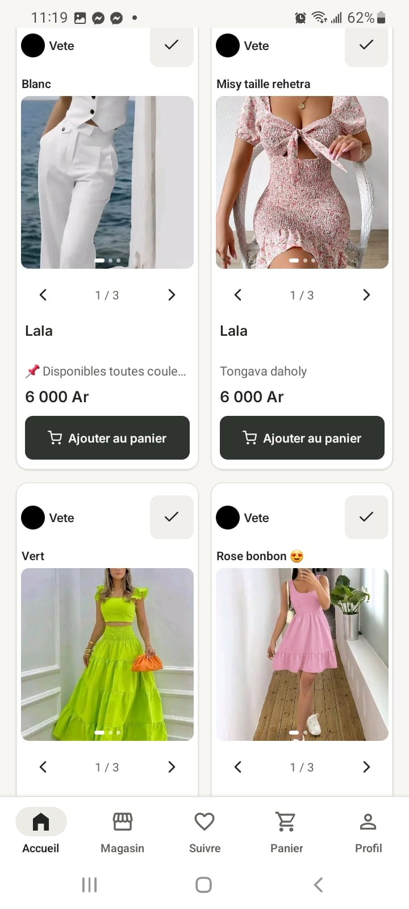
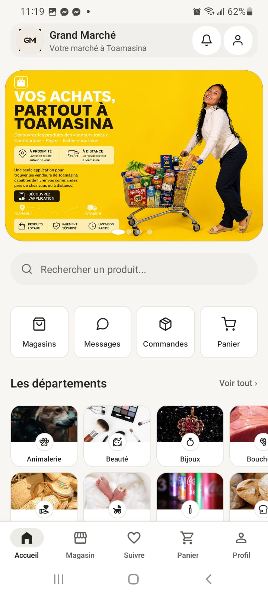
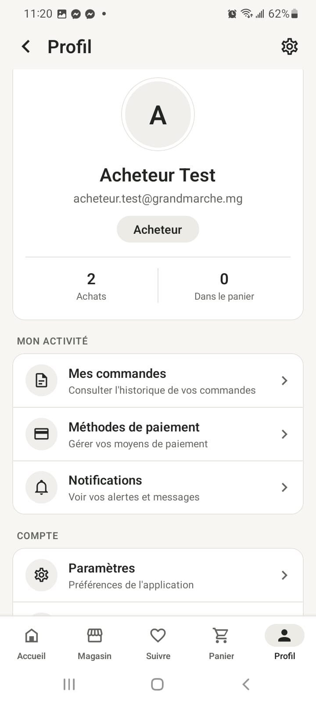
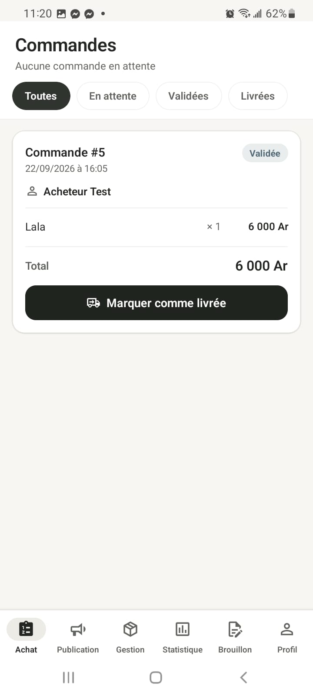
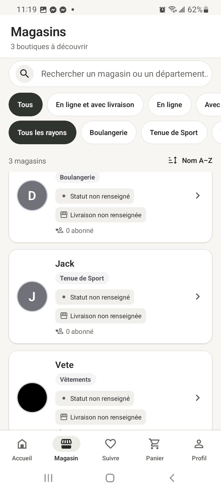
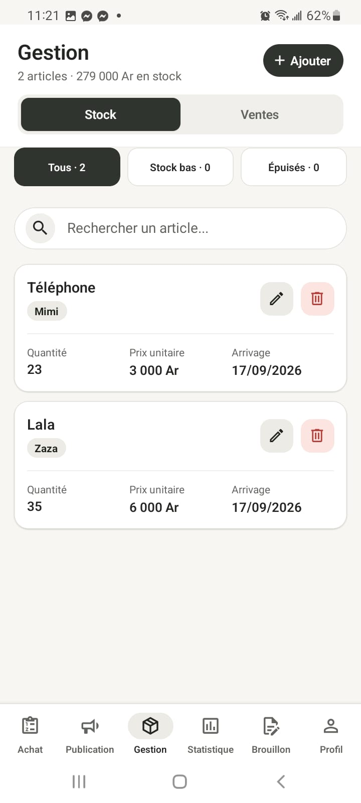
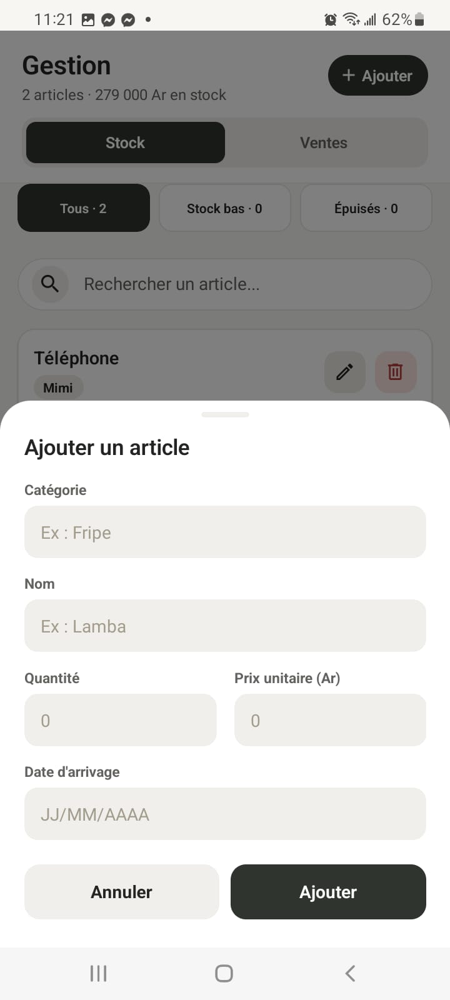
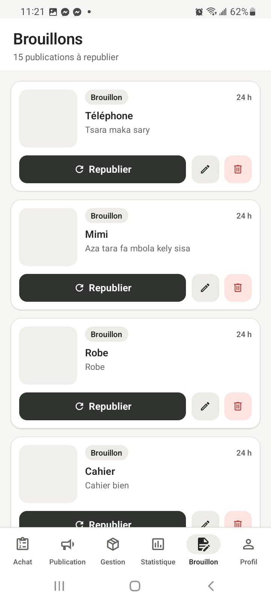
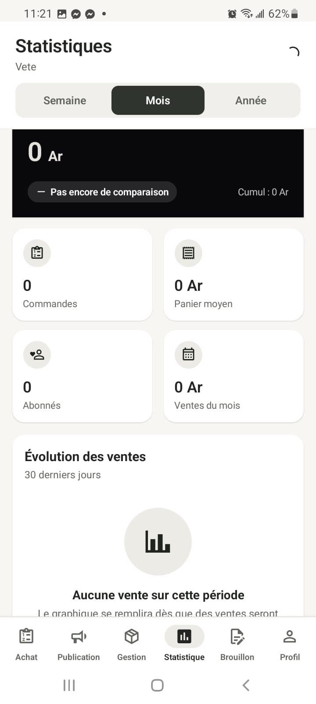

Screen 01
Buyer sign-in
The buyer sign-in screen supports email and password, with a Google sign-in option.
A mobile marketplace designed to connect sellers and buyers in Toamasina, with a catalogue, stores, orders, a shopping cart, inventory management, drafts and seller statistics.
A mobile marketplace designed to connect sellers and buyers in Toamasina, with a catalogue, stores, orders, a shopping cart, inventory management, drafts and seller statistics.
The project covers buyer and seller journeys, with dedicated interfaces for discovery, shopping, business management and performance tracking.

Each screenshot below illustrates a screen, a feature or a key step in the application.
The buyer sign-in screen supports email and password, with a Google sign-in option.

Products are displayed with photos, prices, variants and an add-to-cart button.

The Grand Marché home screen includes search, shortcuts, departments and an introduction to the local marketplace.

The buyer profile includes a purchase summary, settings, payment methods and notifications.

Order management with status filters, order details and delivery confirmation.

Find and explore stores using filters for department, status and delivery availability.

A seller workspace for tracking inventory, searching items and editing or removing products.

The product form includes category, name, quantity, unit price and arrival date.

Manage draft listings with options to republish, edit or delete.

The seller dashboard shows orders, average order value, followers, sales and sales trends.